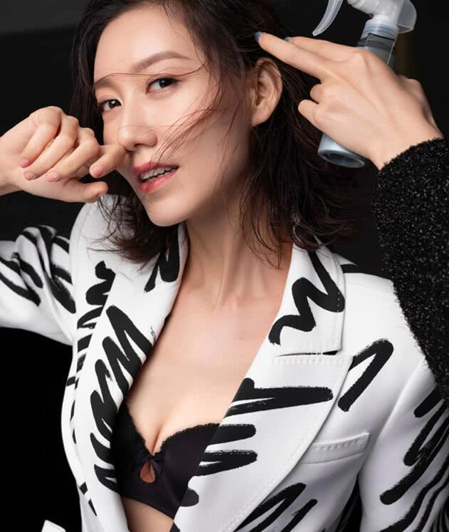

原图

blur[高斯模糊]{{blurVal}}px
px
grayscale[灰度][default: 0]{{grayscaleVal}}%
[0% ~ 100%]
contrast[对比度]{{contrastVal}}%
[0% ~ 1000%]
hue-rotate[色相旋转]{{hueRotateVal}}deg
[0deg ~ 360deg]
invert[反转]{{invertVal}}%
[0% ~ 100%]
参考资料：
MDN filter